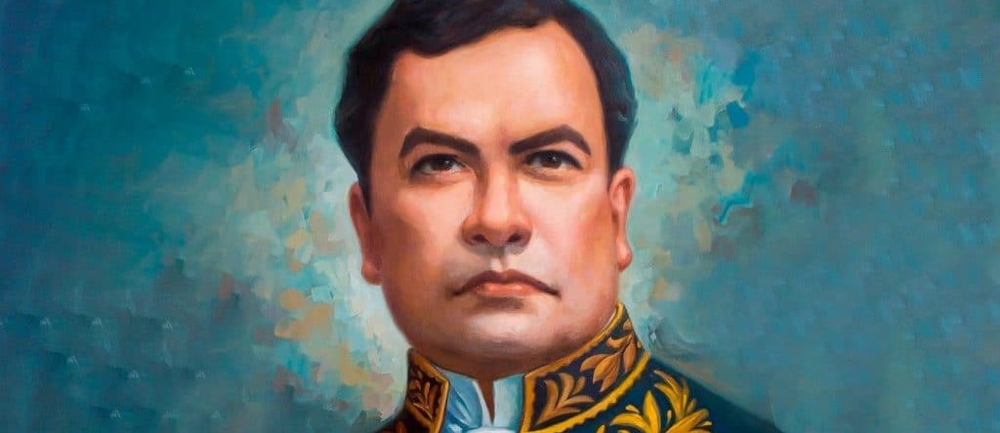

Mapa de monumentos de Rubén Darío
Un recorrido cultural desde Nicaragua para el mundo
Rubén Darío
Rubén Darío fue un poeta, periodista y diplomático nicaragüense, considerado el máximo representante del modernismo literario en lengua española. Nació en 1867 en Nicaragua y su obra renovó profundamente la poesía hispanoamericana y española.